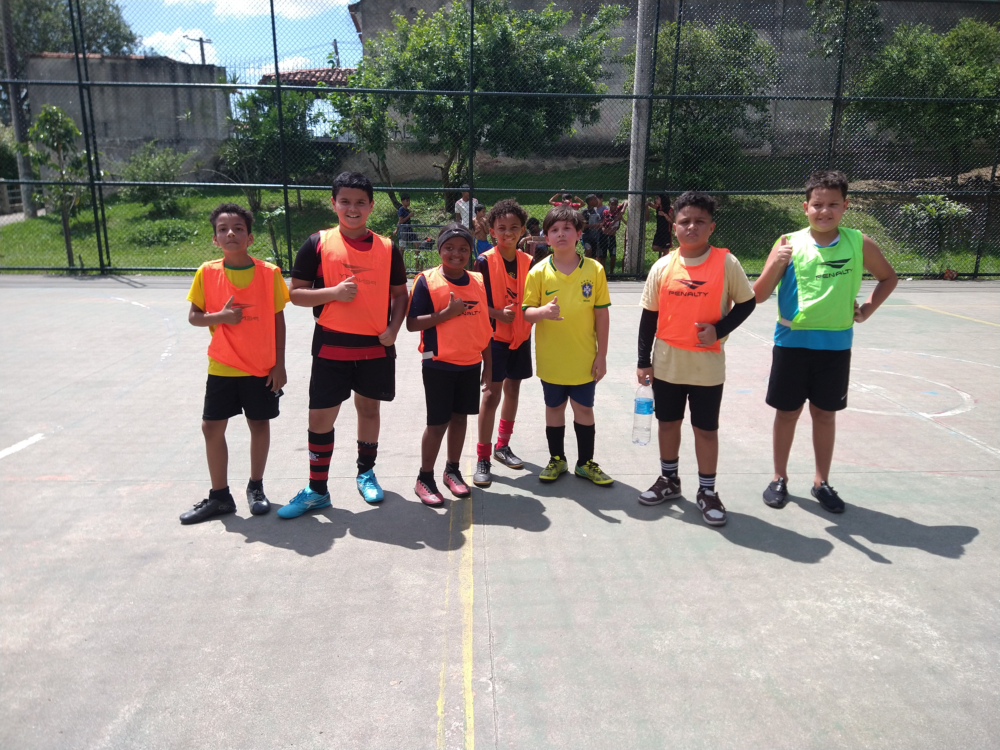
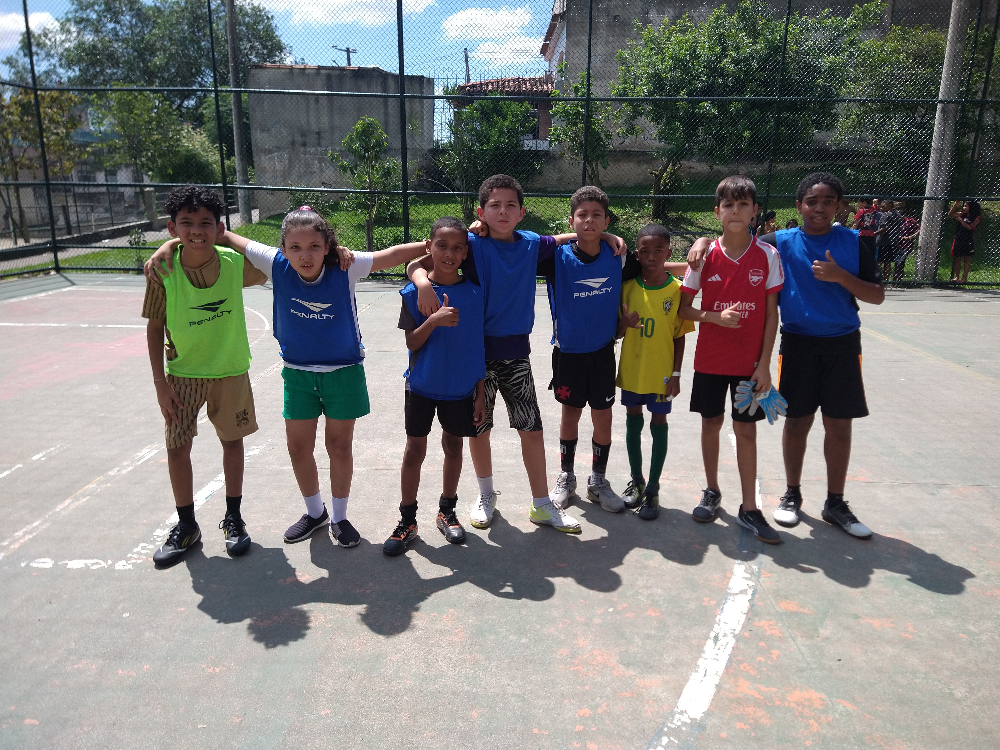

Interclasse da Villaça 2026
Primeira rodada: resultados e impressões - Confiram na reportagem de ROSA ARAUJO
O time 4 ganhou de 4 a 1 do time 1.
O time 2 ganhou de 2 a 1 do time 3.
O artilheiro da primeira rodada foi o Lohan Andrade, com 2 gols.
De acordo com o Miguel e o Rhian, o time poderia ter passado mais a bola e feito mais gols.
Já de acordo com o Caio, o time poderia ter passado mais a bola e ter trocado jogadores.
E podemos esperar grandes emoções dos jogos.


O time 4 venceu de goleada o time 1 na estreia do campeonato.
Após um primeiro tempo equilibrado, com chances para os dois times, o segundo tempo começou com uma pressão do time 4, que marcou com Lohan Andrade duas vezes, Gustavo Gonçalves e Henrique Alves ampliaram. Já pelo time 1, Arthur Fernando, que levou um cartão amarelo, descontou marcando o seu primeiro gol na competição.
Na partida mais equilibrada da rodada, o time 2 saiu na vantagem ao vencer o time 3 por 2 a 1.
O destaque do jogo foi o jogador Daniel Tavares, que perdeu enumeras chances de fazer gol para o seu time. O time 3, desfalcado dos seus jogadores mais habilidosos, foi bastante guerreiro mas não foi o suficiente para impedir a derrota. O time 2 com uma excelente atuação de Apollo dos Santos, que marcou um gol, fechou o placar em 2 a 1 com o gol de Bruno Hermogenes.
A rodada de sábado passado dia 12/09/2026 foi trans ferida para este sábado 19/09/26, devido às chuvas que não param no Rio de Janeiro.
A previsão do tempo para este sábado (19 de setembro de 2026) em Realengo, Rio de Janeiro, indica temperaturas entre 18°C e 26°C, com sol entre nuvens e baixa probabilidade de chuva.Resumo do Sábado em RealengoTemperatura Mínima: 18°CTemperatura Máxima: 26°CCondição do Tempo: Sol com períodos de céu parcialmente nublado durante o dia. À noite, o céu fica com poucas nuvens ou parcialmente nublado.Chuva: Chance baixa de precipitação (em torno de 5% a 10%).Umidade do ar: Variando entre 61% e 88%.Vento: Direção Leste/Nordeste com velocidade média de 8 a 11 mph (aprox. 13 a 18 km/h).Índice UV: Alto (chegando a 7), recomendando uso de protetor solar durante o período da tarde.Para acompanhar atualizações em tempo real, consulte a página oficial do Climatempo.
Fonte: Google Gemini
Sábado dia 12 de setembro começará o tão aguardado campeonato Villaça League.
Mais uma vez, conto com o apoio dos responsáveis e a presença de todos os atletas e assistentes.